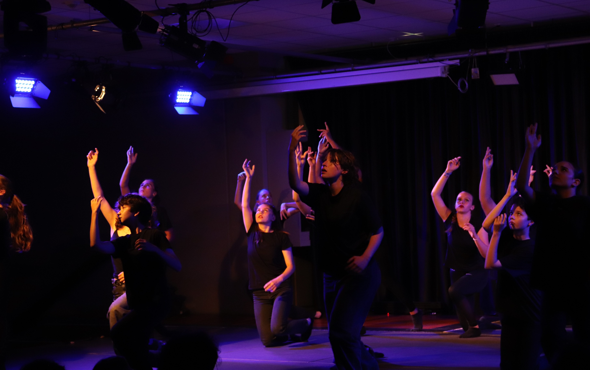
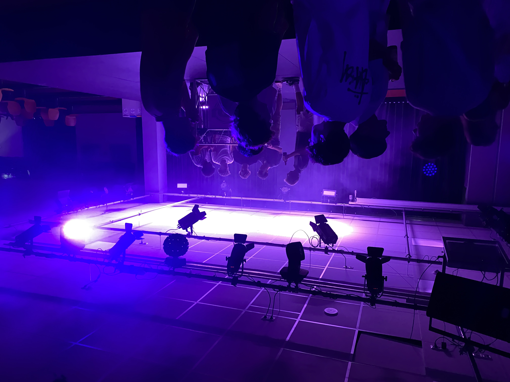
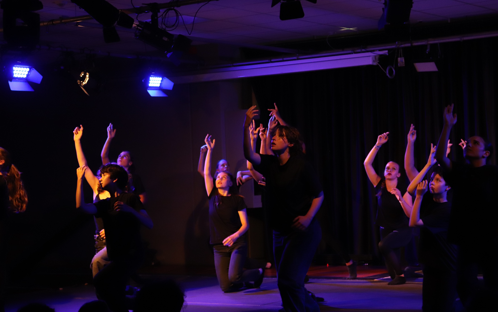
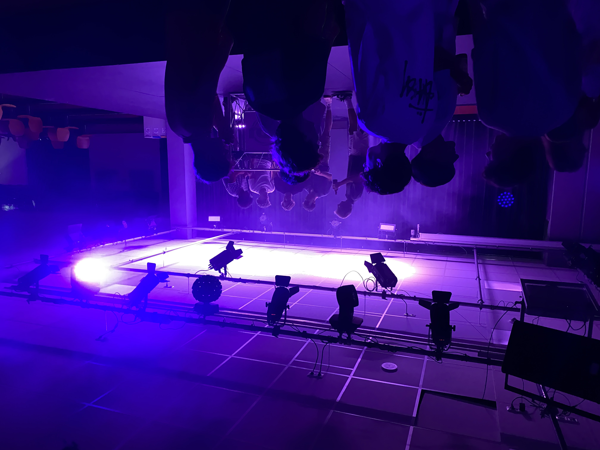

Der erste Tag..

 



…begann um 14Uhr mit der Auftaktveranstaltung. Nach monatelanger Planung war es endlich so weit. Vor über 300 Personen in unserer Aula begannen die 66. Theatertage der bayrischen Gymnasien. Auf unterhaltsame Weise wurden unser Direktor Herr OstD Christian Zenger sowie unsere Ehrengäste – diese mit einer Inszenierung in Anlehnung an die 90er-Datingshow „Herzblatt“ – inszeniert.
Mit dem anschließenden Stehempfang öffnete auch unser Festivalcafé seine Tore für alle anwesenden Gäste, welches auch in den folgenden Tagen mit seinen gemütlichen Loungemöbel ein guter Ort sein wird, um seine Zeit zu verbringen. Hier können die Gäste sowohl drinnen als auch draußen sitzen, sich entspannen oder sich bei einem Kaltgetränk über die letzte Theatererfahrung austauschen.
Nach diesem Programmpunkt ging es im historischen Stadttheater Amberg schauspielerisch los. Die Theatergruppe des Ludwigsgymnasiums aus Straubing machte mit ihrem Stück „Kann weg!“, welches von arbeitslosen Clowns handelt, hier den Anfang.
Nach dem anschließenden gemeinsamen Abendessen in der Schulmensa durfte auch die Theatergruppe des Carl-Orff-Gymnasiums aus Unterschleißheim mit der Aufführung von „Glücklich sein in einer schlechten Welt“ ihre Schauspielkünste unter Beweis stellen.
Den entspannten Abschluss eines rundum gelungenen ersten Tages machte Karl Godelmann alias DJ Kago mit einer DJ-Show.